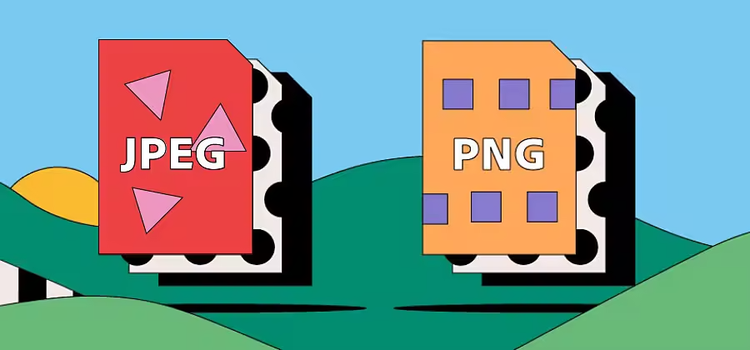

Leia aqui o que precisa ser feito para realizar essa atividade
SECRETARIA DO PATRIMÔNIO DA UNIÃO · MANUAL OPERACIONAL
Capa do processo no sistema SEI — o número aparece
no topo da tela, destacado em amarelo
💾 Para usar offline: salve sua imagem em
hints/img/hq720.png e atualize o atributo
src acima.
O que é o Processo SEI?
O Sistema Eletrônico de Informações (SEI) é a plataforma
oficial de gestão de processos administrativos adotada pelo Governo Federal.
Cada processo recebe um número único no momento de sua autuação, que serve
como identificador permanente ao longo de toda a tramitação.
Ao preencher o formulário de análise de requerimentos da SPU, o servidor
deve informar este número com exatidão, pois ele vincula todos os documentos,
despachos e decisões ao processo correto. Um número incorreto pode gerar
inconsistências graves no sistema patrimonial.
O número do processo SEI é composto por cinco segmentos
separados por pontos, barra e hífen, totalizando 20 caracteres alfanuméricos.
Ele é gerado automaticamente pelo sistema no momento da autuação e não pode
ser alterado posteriormente.
Estrutura e formato do número
O número segue o padrão estabelecido pelo Decreto nº 8.539/2015 e pelas
normas do Ministério da Gestão e da Inovação em Serviços Públicos.
Compreender cada segmento é fundamental para validar se o número
informado pelo interessado está correto.
04972 . 001234 / 2024 - 87
Segmento
Descrição
Exemplo
NNNNN
Código SIORG do órgão autuador (5 dígitos)
04972
NNNNNN
Número sequencial do processo (6 dígitos)
001234
AAAA
Ano de autuação (4 dígitos)
2024
DD
Dígitos verificadores (2 dígitos)
87
"O número do processo SEI é o elo entre o requerimento do interessado
e toda a cadeia documental que instrui a decisão administrativa.
Sua correta informação garante rastreabilidade e segurança jurídica
ao processo de destinação patrimonial."

RECIBO DE PROTOCOLO04972.001234/2024-87CARIMBO
`"
>
Recibo de protocolo físico — o número SEI aparece
em destaque na área central do documento
💾 Para usar offline: salve sua imagem em
hints/img/media.png e atualize o
atributo src acima.
Onde encontrar o número
O número do processo SEI pode ser localizado em diferentes fontes,
dependendo de como o protocolo foi realizado. Em qualquer caso,
o número deve ser idêntico em todos os documentos — qualquer
divergência indica possível erro de autuação.
Sistema SEI (acesso eletrônico): na tela inicial
do processo, o número aparece no cabeçalho, destacado em negrito,
logo abaixo do tipo e da especificação do processo.
E-mail de confirmação de protocolo: enviado
automaticamente ao endereço cadastrado no momento do requerimento,
com o número no assunto e no corpo da mensagem.
Recibo de protocolo impresso: fornecido no
balcão de atendimento da SPU, com o número em destaque e
carimbo do servidor recebedor.
Ofícios e despachos anteriores: qualquer
documento já expedido no âmbito do processo trará o número
no cabeçalho ou rodapé.
⚠️ Pontos de atenção
Não confunda o número do Processo SEI com o NUP
(Número Único de Protocolo) de sistemas legados como o SIPAR ou o
SAPIENS. Embora visualmente semelhantes, possuem estruturas distintas
e não são intercambiáveis neste formulário.
Verifique se o processo está aberto e ativo
na unidade responsável pela análise antes de informar o número.
O processo deve estar vinculado à SPU e conter
o requerimento original e todos os documentos de instrução.
Processos sigilosos requerem nível de acesso
específico — confirme as permissões antes de prosseguir com
a análise.
Em caso de processos apensados, informe sempre
o número do processo principal (o que contém o requerimento),
não o número do processo acessório.